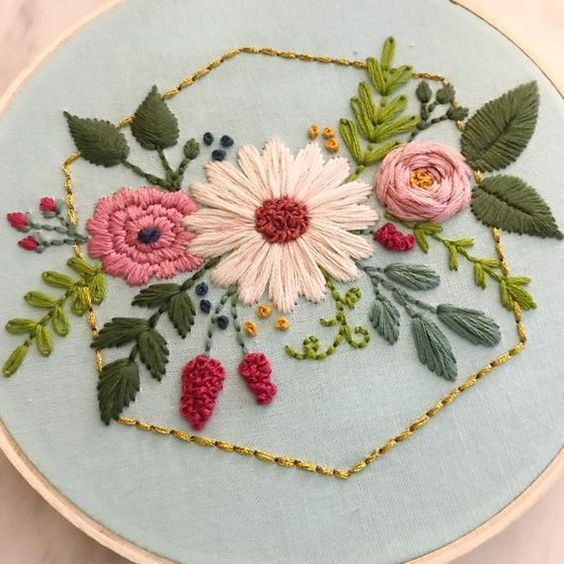
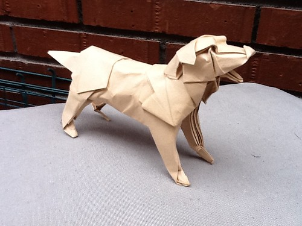
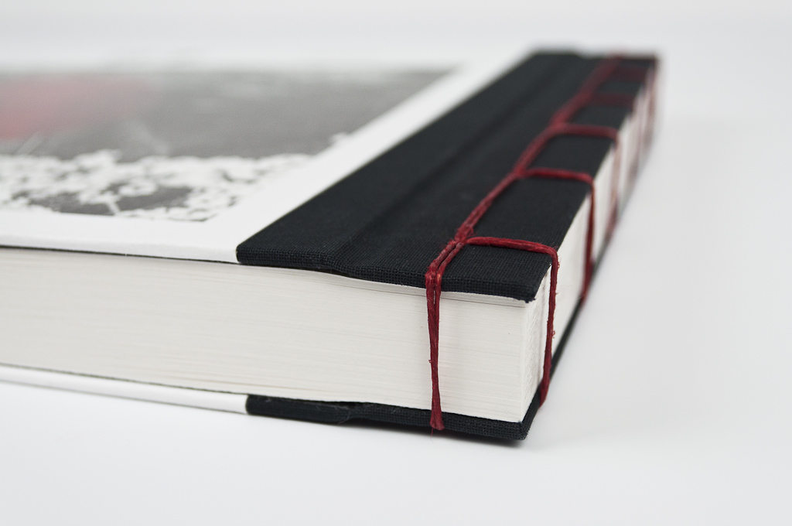
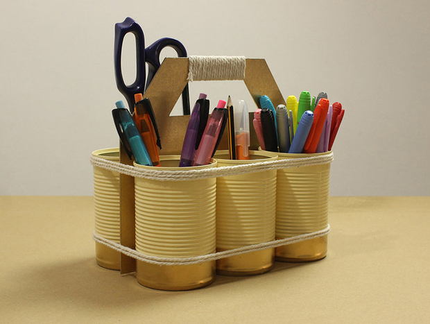

BordadoEl bordado es un arte que consiste en la ornamentación de una superficie flexible, generalmente una tela, por medio de hebras textiles. |
 |
OrigamisTécnica de realizar figuras u objetos con hojas de papel doblándolas sucesivas veces. |
 |
EncuadernaciónEncuadernación es el acto de coser, pegar, grapar o fijar varias hojas, pliegos o cuadernos por lo general de papel y ponerles cubierta. |
 |
Reciclaje de todo tipoLos materiales reciclables son aquellos que pueden ser reutilizados de nuevo tras su uso principal |
 |